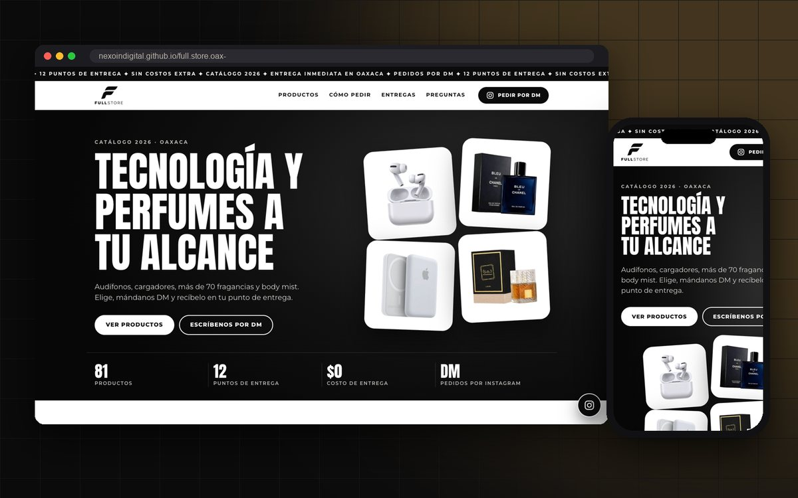
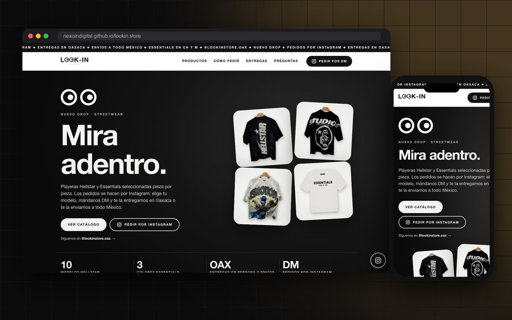
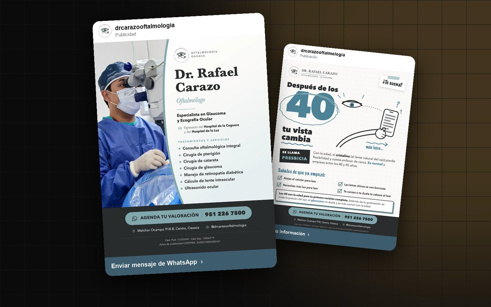
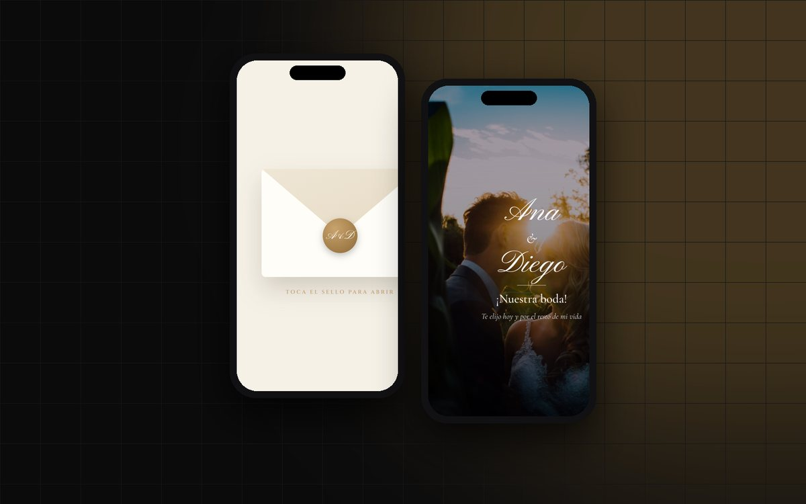

- Inicio
- Casos de estudio
Casos de estudio
Lo que ya construimos, y por qué.
Cada proyecto empieza igual: primero entendemos el negocio, después construimos solo lo que necesita. Aquí contamos el reto, lo que hicimos y cómo quedó, sin cifras infladas.

Catálogo en línea · Tecnología y perfumes
Full Store: 81 productos en un solo link
- El reto
- Vendían todo por mensaje directo. Cada cliente preguntaba lo mismo: qué modelos hay, cuánto cuestan y dónde se entregan.
- Lo que hicimos
- Un catálogo en línea con sus 81 productos, cada uno con foto, filtros por categoría, sus 12 puntos de entrega y un botón que manda el pedido ya escrito por Instagram.
- Cómo quedó
- Ahora comparten un solo link. El cliente ve todo por su cuenta y escribe cuando ya eligió.
Proyecto: @full.store.oax
Ver el catálogo en vivo

Catálogo en línea · Streetwear
Look-in Store: cada drop, sin repetir la misma respuesta
- El reto
- Con cada colección nueva llegaba la misma pregunta por mensaje: “¿qué modelos tienes?”.
- Lo que hicimos
- Un catálogo de streetwear con cada playera numerada, sus colecciones y un botón para pedir por Instagram. Entregas en Oaxaca y envíos a todo México.
- Cómo quedó
- El cliente pide por número de modelo y la tienda solo confirma talla y entrega.
Proyecto: @lookinstore.oax
Ver el catálogo en vivo

Presencia digital · Oftalmología
Dr. Rafael Carazo: de no aparecer en internet a tener presencia completa
- El reto
- Un especialista con años de formación que casi nadie encontraba en internet: sin ficha de Google y sin redes.
- Lo que hicimos
- Creamos su Perfil de Empresa en Google desde cero, configuramos su Instagram y Facebook con biografía, enlace a WhatsApp y destacadas, y desde octubre de 2026 llevamos su contenido mensual: un video, publicaciones y la gestión de sus anuncios.
- Cómo quedó
- Hoy quien lo busca encuentra su consultorio, sus horarios y un botón para pedir cita por WhatsApp.
Cliente desde 2026 · @drcarazooftalmologia
Ver su Instagram

Proyecto propio · Eventos
Invitación digital de boda que se abre como sobre
- El reto
- Las invitaciones impresas no dicen cómo llegar, no confirman asistencia y se pierden.
- Lo que hicimos
- Una invitación para celular con sobre que se abre, cuenta regresiva, mapa de la ceremonia y la recepción, galería, música y confirmación por WhatsApp.
- Cómo quedó
- Los invitados confirman en un toque y los novios tienen todo en un solo link.
Demostración con datos de ejemplo
Más páginas que hemos hecho
Toca cualquiera para abrirla tal como la ven sus clientes.
¿Tu negocio se parece a alguno? Cuéntanos tu caso y te decimos qué resolveríamos primero.
Solicitar diagnóstico